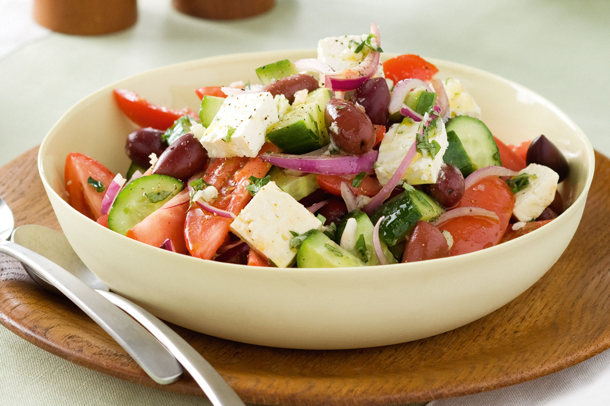

Easy Greek Salad
Best easy recipe
Prep time: 10 minutes
Cook time: 5 minutes
Total time: 15 minutes
Instructions
- In a small bowl, whisk together the olive oil, vinegar, garlic, oregano, mustard, salt, and several grinds of pepper.
- On a large platter, arrange the cucumber, green pepper, cherry tomatoes, feta cheese, red onions, and olives. Drizzle with the dressing and very gently toss. Sprinkle with a few generous pinches of oregano and top with the mint leaves. Season to taste and serve.
Ingredients
- ¼ cup extra-virgin olive oil
- 3 tablespoons red wine vinegar
- 1 garlic clove, minced
- ½ teaspoon dried oregano, more for sprinkling
- ¼ teaspoon Dijon mustard
- 1 English cucumber, cut lengthwise, seeded, and sliced ¼-inch thick
- 1 green bell pepper, chopped into 1-inch pieces
- 2 cups halved cherry tomatoes
- 5 ounces feta cheese, cut into ½ inch cubes
- ⅓ cup thinly sliced red onion
- ⅓ cup pitted Kalamata olives
- ⅓ cup fresh mint leaves
- ¼ teaspoon sea salt
- Freshly ground black pepper
